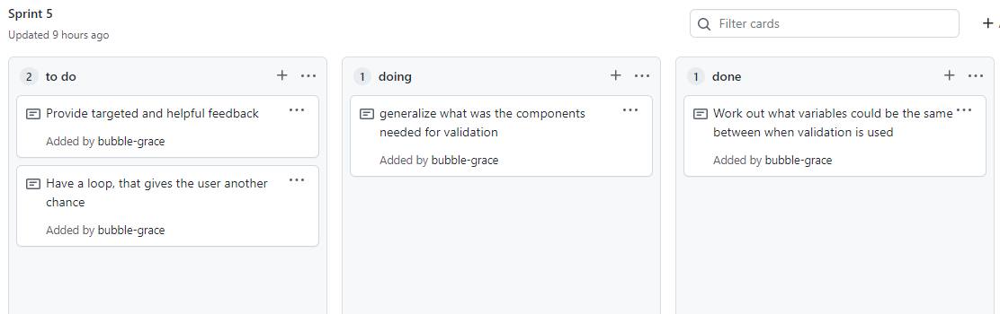

Brief
The aim of this project is to simplify and organise phone orders for a pizza company
To start this project, I made a plan of what I needed, this includes but was not limited to pizza price, lists and quiting the program. For this I also made a project backlog, this has all the information stored in one place, from this I will make multiple sprints approximity one for each idea. The focus of this method of structuring, is to break a large project into small manageble chunks these are sprints, for this project these sprints will be about one to two lessons.


Version One
Sprint One Plan

This is my Code for Sprint 1
def print_with_indexes(L):
for i in range(0, len(L)):
output = "{}: {}: {} : {}".format( i,L[i][0],L[i][1], L[i][2])
print( output )
run = True
def main_loop():
run = True
my_L = [
["Margarita", 18.5, 0],
["Piccolo", 18.5, 0],
["La Prima Donna", 25.5, 0],
]
while run == True:
my_menu = """
Press
'q' to quit
'r' to review the see the menu
"""
print(my_menu),
user_choice = input ("please enter your option here: ")
if user_choice == "q":
print("Loop has stopped, Thank you")
run = False
elif user_choice == "r":
print_with_indexes(my_L)
else:
print ("sorry your answer was not valid")
main_loop()
Sprint One Plan
This is my Code for Sprint 1
def print_with_indexes(L):
for i in range(0, len(L)):
output = "{}: {}: {} : {}".format( i,L[i][0],L[i][1], L[i][2])
print( output )
run = True
def main_loop():
run = True
my_L = [
["Margarita", 18.5, 0],
["Piccolo", 18.5, 0],
["La Prima Donna", 25.5, 0],
]
while run == True:
my_menu = """
Press
'q' to quit
'r' to review the see the menu
"""
print(my_menu),
user_choice = input ("please enter your option here: ")
if user_choice == "q":
print("Loop has stopped, Thank you")
run = False
elif user_choice == "r":
print_with_indexes(my_L)
else:
print ("sorry your answer was not valid")
main_loop()
This code above prints out the list when the user presses r and then also can quit the loop by pressing q, if they enter any other option a validation error. The aim of this code is establish the list, this list has three variables, one for price, another for name and the third for amount of pizzas. The quit is to exit the loop and prints a helpful message indicating this. The review option shows the list formatted for easier use. The list here only has three variables, this makes the code at the moment easier to follow. Latter I will expand this lists to 10 options.
This version is currently functional and works just as expected with the input you would exspect, the validation despite being smaller works well and means the code will not automatically crash. The plan for the next version is to add an amount to the pizzas, to do this we need to know the indices.

Above is a photo of my tests
Sprint Two Plan

Code
def print_with_indexes(L):
for i in range(0, len(L)):
output = "{}: {}: {} : {}".format( i,L[i][0],L[i][1], L[i][2])
print( output )
def add_pizza(L):
print_with_indexes(L)
my_index = int(input("Please select what index number, would you like to add pizza to? "))
new_amount = int(input("How many of the pizza do you want to add? "))
if new_amount <= 5:
L[my_index][2] += new_amount
print_with_indexes(L)
else:
output = "Sorry your number is above 5, the max number of one type of pizza is 5"
print (output)
run = True
def main_loop():
run = True
my_L = [
["Margarita", 18.5, 0],
["Piccolo", 18.5, 0],
["La Prima Donna", 25.5, 0],
]
while run == True:
my_menu = """
Press
'q' to quit
'r' to review the see the menu
'a' to add pizzas to the order
"""
print(my_menu),
user_choice = input ("please enter your option here: ")
if user_choice == "q":
print("Loop has stopped, Thank you")
run = False
elif user_choice == "r":
print_with_indexes(my_L)
elif user_choice == "a":
add_pizza(my_L)
else:
print ("sorry your answer was not valid")
main_loop()
Description
In this version you can now add pizzas, this allows the user to be interactive with the system. To add pizzas you need to know the index number, this is done through a simple code that gets referenced multiple times. The one issue I had here was accessing my files, this was easily fixed through some re-organisation. This code is controlled by the indexes, the user enters which indices they want to access, then adds the amount to the list.
This is all functional, to do this I added some basic validation. The company asked that there would be a max of pizzas per type. If they return more than 5 pizzas the program sends an error message and doesn't add the amount. The next level with this validation is to add a different error message if the user enters a string instead of an integer.
Photos of the working code and Evaluation

Above is a photo of my tests for this version, the first part of the tests went well and performed as expected. However when I went to test the adding function, this worked with the normal 0 to 2 indices. However when I went to try to put an indices of 3, the code chrashed. This is an issue I would like to sort out for the next version with some validation, including an except errors part of the code.
Sprint Three Plan

Code
def subtract_pizza(C):
print_with_indexes_2(C)
my_index = get_user_input(0, len(C)-1, "Please select what index number, would you like to subtract pizza from? ")
sub_amount = get_user_input(0, C[my_index][2], "How many of the pizza do you want to subtract? ")
new_amount = C[my_index][2] - sub_amount
C[my_index][2] = new_amount
print_reciept(C)
def get_user_input (lower, higher, output):
getting_input = True
while getting_input == True:
try:
user_input = int(input(output))
except ValueError:
print("You have not entered an integer")
continue
if user_input < lower or user_input > higher:
print("you have not entered a number between {} and {}".format(lower, higher))
continue
getting_input = False
return user_input
def total_calculator(C):
total = 0
for i in range(0, len(C)):
sub = C[i][2] * C[i][1]
total += sub
return total
def print_reciept(C):
print("----" * 10)
for i in range(0, len(C)):
if C[i][2] > 0:
output = "You have ordered {} {} pizza/s at ${} each".format(C[i][2], C[i][0], C[i][1])
print(output)
amount = total_calculator(C)
output2 = "This total is ${} ". format(amount)
print(output2)
print("----" * 10)
Photos of the working code
Reflection
In this version you can now subtract pizzas, this allows the user to be interactive with the system. To subtract pizzas you need to know the index number, this is done through a simple code that gets referenced multiple times. This is very similar to the code for the addition of pizzas.
However the new feature here is the addition of a print receipt function, this collects the list of the users order, this being the amount and type of pizzas ordered. This then goes to the calculator where the total is calculated. This is all printed in an easy to follow “receipt” format.

This is all functional, to do this I added some basic validation. The user can only subtract up to the amount of pizzas they have ordered above is a photo before this code was implimented. This means there are no negative values of pizzas as this could run into issues further down the tract. Because there are now two functions that require validation, I have created a function for this, it collects the maximum and minimum number of pizzas to be added or subtracted and the message/ouput you would like the user to see.
Version Four
Chose Delivery Option
Sprint Four Plan

Code
def delivery_option(D):
output = """
1: Delivery, this comes with an extra cost of $3
2: Pick up, you come in store to pick up at no extra cost
"""
print(output)
choice = get_user_input(1, 2, "Which option would you like? ")
if choice == 1:
address = check_varible(6, 50, "Where would you like your pizza/s delivered to? ")
name = check_varible(2, 25, "Please enter your name: ")
number = check_phone_number( "What is your phone number? ")
print("Your pizza/s will be delivered to {}".format(address))
print("Your pizza/s are now under the name {}".format(name))
print("The phone number the pizza/s is associated with will be {}".format(number))
temp = [name, number, address]
D.append (temp)
elif choice == 2:
print("You have chosen pickup ")
name = check_varible(2, 25, "Please enter your name: ")
number = check_phone_number( "What is your phone number? ")
print("Your pizza/s are now under the name {}".format(name))
print("The phone number the pizza/s is associated with will be {}".format(number))
temp = [name, number]
D.append(temp)
def check_phone_number(output):
getting_input = True
while getting_input == True:
try:
user_input = int(input(output))
except ValueError:
print("You have not entered an integer")
continue
getting_input = False
return user_input
def check_varible (min, max, output):
get_name = True
while get_name == True:
name = input(output)
name = name.title()
if len(name) > max:
print('Sorry you have entered something with too many characters')
continue
elif len(name) < min:
print("Sorry you have enter something with to little characters")
continue
get_name = False
return name
For this version I worked on creating a delivery option that allowed the user to choose either takeaway at no extra cost or delivery at a cost of three dollars. Both these options need more information about the user including but not limited to phone number, address and name. The name and address of the user was easy to validate with string validation. The hard part was the phone number for this I had two trial options, these had feature the same and different
Trial 1
This trial was very simple and involved validating the length of the phone number with a len function. This ment the phone number had to be between 8 and 12 digits long as this was the minimum and maximum length a regional phone number could be according to Google. There was a few errors when testing this code including that if the phone number started with a 0, the code would drop it, because it was looking for the simplest form of the “number”. This could lead to many problems in the future.
Trial 2
This trial was one including regex, that needed to be imported. This is shown by the import re code at the top of the page. This imports a package from python that does not need to be downloaded. The function I wanted to run this code through was this: (^\([0][3]\))(\d{7}$)|(^\([0][4]\))(\d{7}$)|(^\([0][6]\))(\d{7}$)|(^\([0][7]\))(\d{7}$)|(^\([0][9]\))(\d{7}$)|(^\([0][2][1]\))(\d{6,8}$)|(^\([0][2][2]\))(\d{6,8}$)|(^\([0][2][7]\))(\d{6,8}$)|(^\([0][2][9]\))(\d{6,8}$)|([0][8][0][0])([\s])(\d{5,8}$) This looks very confusing however it all makes sense, to start with I wanted to work out what type of phone numbers people could have and I ended up with this list for New Zealand.
Landline phone numbers with area codes
- 03
- 04
- 06
- 07
- 09
Mobile phone numbers with the prefix
- 021
- 022
- 027
- 029
The final phone number I wanted to include was an 0800 number as theses as also used around NZ
The (^\([0][2][1]\))(\d{6,8}$)|(^\([0][2][2]\))(\d{6,8}$)|(^\([0][2][7]\))(\d{6,8}$)|(^\([0][2][9]\))(\d{6,8}$)| part of this code is for the mobile numbers. I would like the user to enter the prefix to the number in the brackets. This allows the user to enter any prefix beginning with 02 followed by a number that is either 1,2,7 or 9. The rest of the phone number must then be between 6 and 8 digits long as this is what the length should be between. THe format should be (021)flowed by the 6-8 digit number.
The ([0][8][0][0])([\s])(\d{5,8}$) part of this code is for the 0800 numbers as you can see this is not in brackets. The number then must have between 5 and 8 additional digits.
The (^\([0][3]\))(\d{7}$)|(^\([0][4]))(\d{7}$)|(^\([0][7]\))(\d{7}$)|(^\([0][9]\))(\d{7}$) part of the code above is for the landline numbers, this requires that the prefix 0 then either 3,4,6,7 or 9 be in a bracket followed by 7 digits.
Regex Evaluation
By using this code I learnt a lot about regex and how it works, which allowed me to make this code, this became a function through using a if statement with a search function that returned an error if none of these conditions were met. Regex is the search used for validation, in this case for a pattern between the phone number and a viable NZ phone number.
Trial Evaluation
After a lot of reach I decided that option two was viable for the project I was doing. This is because it would accept the number for having the leading zero and provide a more in depth understanding of the code and what errors the number could have. To fully implement this from a trial basis I would need to fully explain to the user what format their answer needed to be in.
Evaluation with photo of test

This version is now functional with the addition of regex. This code now all works, this now I believe collects all the necessary information about the person ordering and their order as in the amount of pizzas they want. The next version will be the final version and this will be to confirm all the order details including delivery, the cost and the amount of pizzas. The user will then confirm the order if the details are correct if not they can be changed.
Version 5
For version 5 the main goal was for the user to be able to confirm all the details including the amount of pizzas and the pickup/delivery information. For this code to work it was printing all the information collected for earlierly, however the user may not have ordered any pizzas or entered no delivery details. The code then gives an error message to the user and then returns to the main menu.
When I was testing this code everything was functional however I noticed I often was typing too fast and made mistakes in the details for the delivery which was the name, phone number and address. To solve this problem I added a function which allowed the user to change or update any of these options.
The second part of this sprint was to clean up the code by making sure the relevant code conventions were followed and there were minimal errors. This was done through the use of the feature on pycharm.
When I was cleaning up my code, I discovered another issue I wanted to fix, this was regarding ordering pizzas. Currently if the user want to order more of a pizza they have already ordered, it lets them order up to five more. To fix this I added a function to check how many if any of the pizzas were already ordered then subtract this from the main pizza maxium amount. This allowed the user to enter up to 5 TOTAL pizzas instead of 5 per extra addition.
Add video here
From this video I discovered one last problem, if the user has subtracted pizzas even if it is at 0 the customer list keeps the variable. Hence I have added a small piece of code that if the pizzas on the list equals zero the code will delete the order from the costumers list.
Relevant Implications Summary
Usability
I believe that my code is easily usable, this is because the questions and feedback were polite and well-meant. I tried to include please and thank you, and other supportive messages. This is shown in my validation and myl message includes supportive phrases to keep the user updated.
Functionality
In order to test the functionality of my code, I got others to test my code as seen in the video above. Despite the users changing it’s mind and making sessions that might not always be what was expected. This all worked without crashing, only calmy displaying the user with an error message that was targeted and helpful.
Sustainability
This was a big thing for me as this helped me to make decisions regarding lists and how to use them. In the first 5 sprints I only had a pizza list of three pizzas, this was because it was easier to manage in the early stages. However for the final version I changed this to a list of 10 pizzas for Marsden Pizza’s menu. This showed the ability for the code to be changed if needed, this is a great example of sustainability, and future proofing methods. The pizza list was not the only list I used, we also had delivery and customer order lists, these stored data, to then be used again and again. Another sustainability feature of this code is the functions, these validations functions are used multiple times one is for getting a string and the other is for getting a number. The only function used less than three times is getting the phone number because this is specialist code only used twice. If I had more time I would work out a way of integrating the phone number validation into the getting number function.